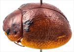
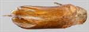
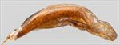
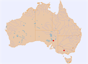

Click on images to enlarge
{kind=link}

Male, Wilpena, Flinders Ranges, South Australia
{kind=link}

Aedeagus, dorsal view (Wilpena, South Australia)
{kind=link}

Aedeagus, lateral view (Wilpena, South Australia)
{kind=link}

Distribution
Name
Trachymela sp. Ta121
Reference specimen
2001-128e, Wilpena, South Australia.
Adult Description
Length: ♀ 5.3-6.3 mm [6], ♂ 5.1-6.0 mm [5].
Colour: head: uniformly light- to mid-brown; labrum straw-brown; mandibles light- to dark-brown with black tips; antennomeres straw-brown, usually uniformly so, sometimes with distal antennomeres (more often only their distal extremity) fractionally darker; pronotum: brown, same shade as head, usually with a black mark present behind each eye, sometimes this is in form of a small round or angular spot at centre of foveal depression, often the black extending towards centre of disc as a band just anterior to middle, in a few specimens these marks are not black but darker brown, rarely completely absent; scutellum: brown, same shade as pronotum, usually broadly edged in a darker shade; elytra: brown, similar or fractionally darker shade as pronotum, a black patch is present adjacent to anterior edge between (and including) VR3 and inner edge of humeral callus extending posteriorly towards but rarely reaching anterior edge of antero-median depression, usually joined to black peak of humeral callus by a thin black strip, rarely this patch is partially fragmented, very rarely is it not black but barely darker than substrate, elytral suture in posterior third is sometimes narrowly edged in darker brown, rarely black, the disc is most frequently uniformly brown, but sometimes a few small, darker brown, rarely black, wart-like elevations are scattered in posterior half, with longitudinal alignment of these evident only in VR2 along the elytral suture; punctures are similar to or a fractionally darker shade than interstices; venter: light- to mid-brown with legs of a similar shade, anterior portion of thoracic ventrites infrequently considerably darker or even black, inside surface of elytral epipleura brown. Cuticular wax: light to quite thick and relatively even layer of greyish wax.
Head; punctures moderately large (pd~1.5-2xef), clearly impressed and quite evenly and quite densely distributed. Antennae short, particularly in females (AL ♂=37-40%BL, ♀=33-35%BL), filiform. Pronotum; almost evenly curved transversely, foveal depression very shallow, rarely absent, with epidermis elevated in a rounded pustule near its centre, discal area with surface usually smooth, rarely slightly uneven, puncturation clearly impressed, evenly distributed and quite dense (spacing~1.5-2.5pd), becoming much coarser at lateral margins, some much finer punctures are scattered among the larger ones. Front margins join lateral margins in a smoothly rounded right-angle, with lateral margin initially straight before curving smoothly and gradually towards rear margin; widest point approximately half-way between anterior and posterior edges. Scutellum; surface smooth or alutaceous, scattered sparsely with very to moderately shallow punctures, rarely unpunctured. Elytra; surface slightly unevenly curved, post-basal depression very slight, sometimes barely perceptible, punctures mostly distinct and relatively large, closely spaced and evenly distributed over anterior two-third of surface, surface more granular in posterior third, with much smaller punctures scattered on the interstices, punctures similar in size on lateral margin as on disc, a few, small elevated, usually dark verrucae are present, these may be relatively evenly scattered over all of disc except area of post-basal depression, often with a denser grouping above humeral callus and in posterior half, several verrucae in VR2 usually forming a longitudinal series along posterior half of suture; interstices usually with some very short, slight-elevated, lateral ridges, surface continuous under humeral callus, lateral margin straight or angled upward very slightly anteriorly. Vertical extension of epipleura considerable (HCE/PW=0.39-0.44). Venter; prosternal process with sides almost parallel, closed anteriorly, a scatter of setae present along prosternal process and on mesosternum, a single seta each on anterior, median and posterior trochanters; front edge of metasternum beveled, slightly rounded; inner edge of posterior of epipleurae with scattered, short setae, less often lacking setae. Aedeagus; moderate in length (LPE=25-30%BL), in dorsal view, sides very slightly and smoothly sinuate, broadest at basal sulcus, converging fractionally towards narrowest point about centre and then broadening again until about centre of ostial opening, from where sides converge in a smooth arc towards apex, dorsal surface smoothly curved with dorso-median channel absent, dorsal ostial processes extending to apex with gap between them widening only slightly towards apex, tip protruding only slightly; in lateral view, bent slightly near basal sulcus, then ventral surface almost imperceptibly and evenly curved towards apex before bending downwards noticeably at about 15% of distance from apex, tip small and slightly deflexed.Larvae
unknown.
Eggs
unknown.
Similar species
Ta120 – a species that is very similar to Ta121 – females can be very difficult to distinguish. The dorsal black markings of these two species are very similar in position and extent and both tend to have small, dark verrucae in the posterior half of elytral disc, though these tend to be more densely distributed in Ta120. The posterior half of elytral suture is often broadly black in Ta120, while this is never the case in specimens of Ta121.
Notes
Ta121 has been collected mostly from unspecified mallee eucalypts, with the single identified record from Eucalyptus viridis (Symphyomyrtus : Adnataria).
Copyright © 2026. All rights reserved.